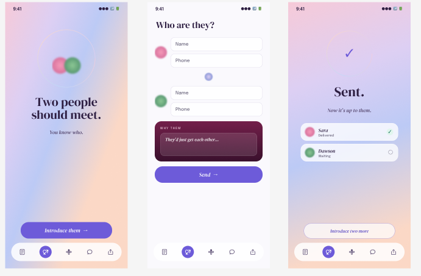

UI/UX Design / Jan 17, 2026
Posy Dating
A UW student-built dating app using a custom compatibility algorithm designed to help combat the Seattle Freeze — moving users beyond swipe-based matching by surfacing genuine personality fit, shared interests, and real date recommendations.

01 / Value proposition

"Dating, slowed down to the pace of a real bloom."
Posy is positioned against the swipe-grind. Instead of infinite faces, you meet a small, considered set each day. Instead of algorithmic opacity, your own friends can plant matches for you.
Every interaction is designed to feel warm, calm, and human — not transactional. The brand tags define the positioning: Intentional. Warm. Non-thirsty. Friend-powered.
This CVP shaped every design decision: the aurora calm palette, the serif headlines, the Cupid friend-introduction feature, and the deliberate limit on daily matches.
02 / Design principles
PRINCIPLES

Four principles anchor the design system: let the aurora carry emotional weight; pair expressive serif headlines with quiet sans body copy; subtract rather than add; and keep language botanical and gentle — never pushy.
CUPID — FLAGSHIP FEATURE

Cupid lets friends introduce two people they think should meet — two names, two numbers. Say why they'd bloom together, and Posy sends a warm private invitation. No swiping, no exposure, just a trusted nudge.
Color palette
A pale lilac canvas, deep aubergine ink, and a single confident violet — lifted by the iridescent aurora field that spans every screen. The palette communicates calm and warmth rather than excitement and urgency.
#F5F0FA
#2A1040
#6B21A8
#C4B5FD
#E9E4EF

04 / Typography

DM Serif Display pairs with Epilogue. The high-contrast Didone serif gives Posy its romantic, editorial voice; the low-contrast geometric sans keeps the interface calm and legible. Neither typeface has italics — every emphasis is created through weight and scale alone.
05 / Key flow — introduce two people

01 / Introduce
02 / Who are they?
03 / Sent
The Cupid flow: tap Introduce → enter two names and phone numbers → explain why they'd bloom → Posy sends a warm invitation. The whole thing takes under 30 seconds and never asks either person to sign up first.
06 / Icon system — flower species set

Rose

Sunflower

Tulip
Each flower species maps to a personality type — the icon set runs through match cards, profiles, and onboarding.
07 / Screen system

Every screen shares the same anatomy: aurora or calm field, serif headline, frosted glass, posy-orb motifs, and the thin-line nav. The six screens — Welcome, Discover, Messages, Matchmaking, Date Ideas, Empty State — cover the full user journey from first open to a planned date.
Understanding the challenge
Posy needed to feel distinct in a dating-app landscape dominated by fast, low-context swiping. The design challenge was to create an experience that made compatibility legible, reduced friction during onboarding, and helped users convert a match into a real-world plan.
Designing a seamless experience
The interface was structured around a clearer quiz flow, more intentional match insights, and curated date-spot recommendations. This made the product feel less transactional and gave users stronger reasons to understand, message, and meet compatible matches.
Design solution
The final direction uses a mobile-first layout, direct navigation, and warm visual language to support meaningful discovery. The product communicates compatibility, simplifies decision-making, and creates a more guided path from profile setup to planning a date.